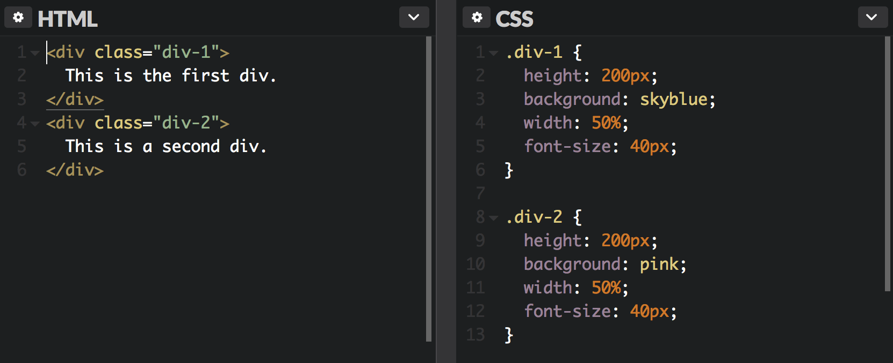
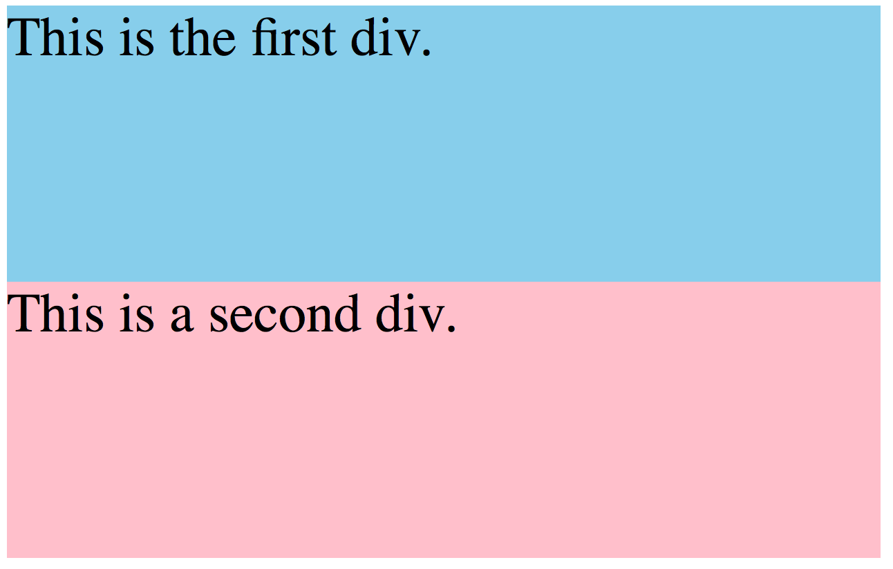
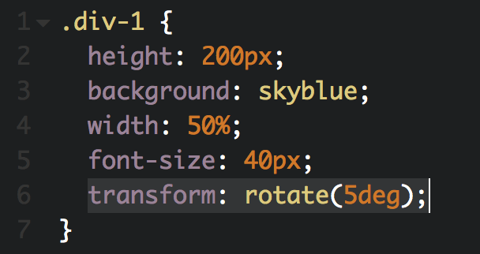
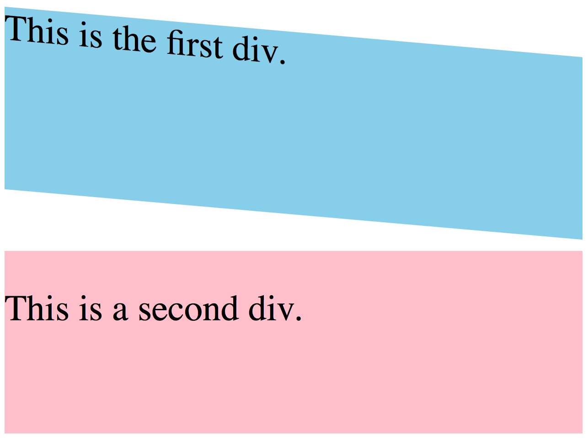
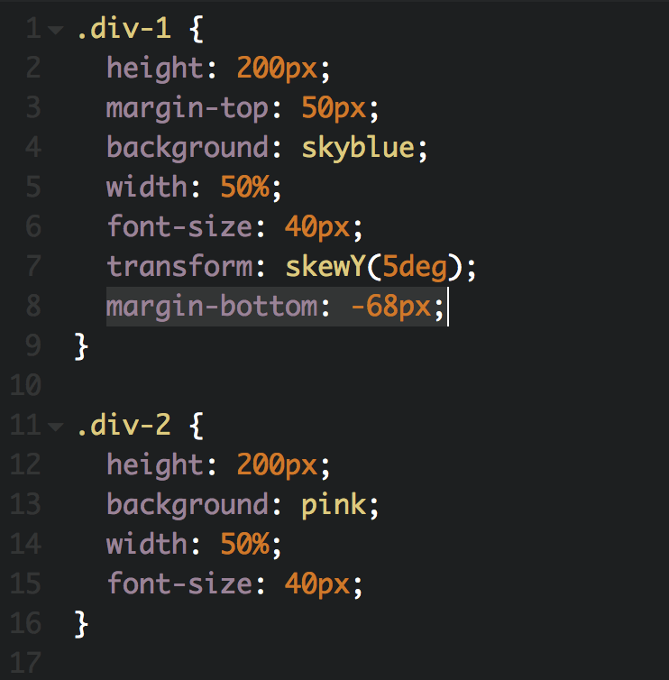
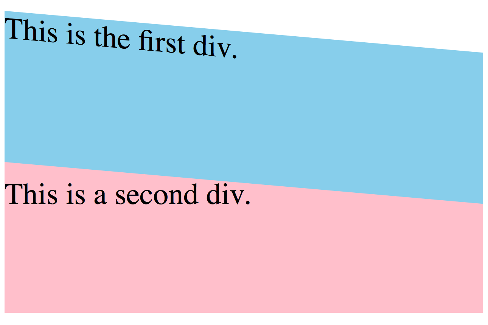
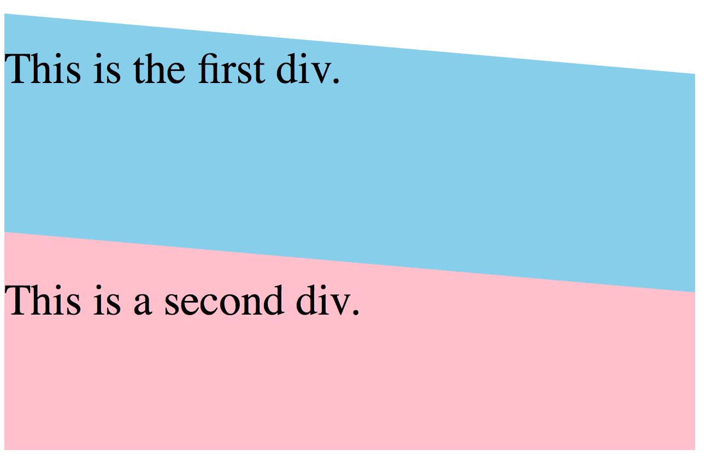

To make slanted or diagonal div with css properties, it is important to understand layering techniques and how the css transform property changes the angling of the container.
First, here are two divs in pink and blue.


We can skew the div by some angle using the transform property with skewY which will rotate block by y axis. Remember that transform property will only work for targets that are positioned absolute, relative or fixed. And this will rotate the div like this.


Here, the whole div has been skewed by some angle but there are white empty gaps between the divs. Simply increasing the height of the div will make div taller without removing the gap.
To fix this, we can play around with negative margins. By adding margin-bottom property to negative pixels, this will create additional room in the bottom.


And along with the div, the text inside the div has also been skewed. To fix this, we can balance the block by adding opposite angle to the text css. This time, since the div is in -5 deg, we can transform the text by 5 deg.

Perfect!